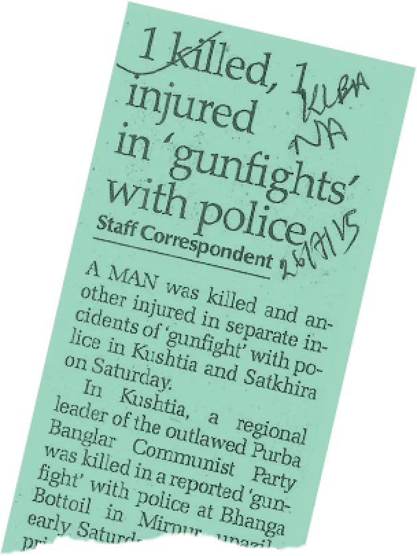
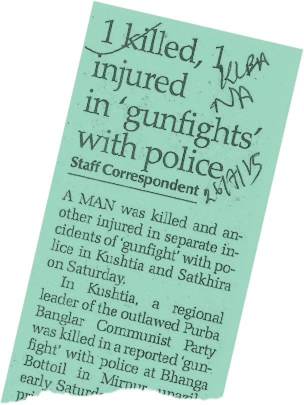

After Sheikh Hasina reascended to power more than a decade ago, Bangladesh’s security forces killed at least 2,597 people in apparent extrajudicial executions, custodial torture, and by firing bullets at protesters, according to a Netra News analysis of data documented by Bangladeshi human rights researchers between 2009 and 2022.
If all these bodies were laid face up and side by side on the surface, they would take up about one-third of Bangabandhu National Stadium’s football field. This visualisation, harrowing as it is, does not encapsulate the full scope of the tragedy because the figure is almost certainly an undercount.
A vast majority of these killings come across as deliberate and targeted, as security forces often carried them out after having the subjects in custody. This pattern amounts to a crucial element in determining their illegality.
The dataset was compiled by Bangladeshi human rights defenders and collated by the Australia-based Capital Punishment Justice Project. The majority of the cases in the dataset cited press reports, which predominantly relayed — and were confirmed by — the accounts of the security forces. Only a select few were investigated firsthand by field workers.
Netra News neither undertook nor conducted individual investigations into each case. However, our researchers independently verified more than 98% of the cases in the dataset using press reports and subsequently updated any incomplete data. We could not verify 49 cases because the news outlet cited to have reported those cases no longer maintains an archive.
Regular units of Bangladesh Police boast about 59% of the total body counts, the analysis shows, as well as a majority of those that appear to be extrajudicial executions. Another arm of the police, its elite and deadliest unit, the Rapid Action Battalion (RAB), is responsible for 27%. Together, all police units account for over 90% of all documented extrajudicial killings.
Our analysis also shows that the number of killings sharply increased around the national elections held in 2014 and 2018, widely criticised as one-sided and rigged. The location-wise analysis reveals, among other things, a disproportionate hit on electoral districts known as opposition strongholds as well as the widespread targeting of the Rohingya refugees during a Duterte-style “war on drugs” between 2018 and 2019.
Previous governments, such as those led by the Bangladesh Nationalist Party (BNP), now in the opposition, as well as an interim technocratic regime that ran the country from 2007 to 2009, were accused of carrying out campaigns of extrajudicial executions. However, the killings appear to have surged during Sheikh Hasina’s ongoing tenure, averaging around 200 per year.
Hasina’s reign has taken an increasingly authoritarian turn in recent years, with substantial opposition to her government virtually quashed. Once hailed as a moderate Muslim democracy, Bangladesh is now ranked as a variant of autocracy by widely respected indexes such as V-Dem and Bertelsmann Stiftung. In the upcoming election scheduled early next year, the opposition is all but unlikely to take part due to fears of a repeat of the previous flawed elections.
In a recent investigation by Netra News and Deutsche Welle, the German public broadcaster, two former RAB commanders admitted to carrying out deliberate murders and implicated the highest levels of the Bangladesh government in some of them, and revealed the RAB’s modus operandi when it does so.
In 2020, after local police killed a former military officer in Cox’s Bazar, which in earlier two years witnessed hundreds of alleged extrajudicial killings during an anti-drug drive, a confidential memorandum authored by military intelligence and leaked to Netra News said the local police engaged in what it described “a killing competition.”
In December 2021, the United States government imposed economic and other sanctions against RAB and several of its current and former commanders over reports of its involvement with numerous extrajudicial killings. Rights groups point out a drop in extrajudicial killings since the announcement of the sanctions.
People Killed from 2009 to 2022 by Security Forces in Bangladesh
The Agents of Death
In addition to carrying out more than half of the 2,597 killings recorded, regular police units participated in joint operations with other units or forces, such as RAB and the Border Guard Bangladesh (BGB), killing an additional 142 people.
In total, police officers were implicated in more than 1,600 deaths — of which 74% were classified by none other than the police as “gunfight” or “crossfire” deaths, widely used euphemism for extrajudicial executions. Of the 2,095 killings that appear to be targeted executions, regular police units alone were responsible for 1,191 or 56%, as well as dozens of others in collaboration with other agencies.
RAB, which is formally part of the police force but operates with de facto autonomy, has an exclusive body count of more than 700. In joint operations with regular police or other agencies, RAB officers participated in the killings of about 100 more. Although regular police single-handedly killed more than double than RAB, the elite unit’s propensity for killings is more pronounced.
The police force is 16 times larger than RAB in staff size, but its kill count is only 2.1 times greater than RAB’s. This implies that on a per capita basis, RAB’s killing rate is eightfold compared to regular police. In addition, a staggering 95% of deaths attributed to RAB carry signs of being premeditated executions, in contrast to the police’s 74%.

|

|

|

|

|

|
Another deadly actor is the Border Guard Bangladesh (BGB), the military-run agency responsible for securing the country’s border. Members of the border forces killed 141 people in solo operations. About a hundred of the deceased appear to have been in BGB’s custody before they were killed. Joint operations that BGB participated in caused an additional 70 deaths.
Ballots & Bullets
Since the Awami League’s return to power in 2009, Bangladesh has conducted national elections twice, in 2014 and 2018, both mired in controversies.
The 2014 elections were boycotted by opposition parties, leaving ruling party candidates in more than half of the constituencies competing against none. The opposition decided to participate in the 2018 elections, but the Awami League clinched over 96% of the parliamentary seats, allegedly through massive rigging operations across the country. Our analysis found that the frequency of extrajudicial killings sharply increased during these two election periods.
In 2013, as opposition protests escalated ahead of the government’s plan to hold a unilateral election, fatalities from security forces’ response quadrupled from the previous year, reaching 270.
The 2013 killings also revealed a geographical pattern: Beyond Dhaka, the capital city, seven districts saw a double-digit death toll.
Six of these districts — Joypurhat, Satkhira, Bogra, Noakhali, Cox’s Bazar, and Chittagong — were electoral strongholds of the opposition parties. In Joypurhat, for example, the ruling Awami League had not won a single constituency in the previous five elections, not even during its countrywide landslide victory in 2008.
Unsurprisingly, the deaths in those districts had strong political undertones: many who died were affiliated with the opposition parties.
Both the election year of 2014 and its subsequent year, 2015, witnessed persistently high casualties, tallying 172 and 186, respectively.
But no figures came close to the death toll in 2018, also an election year, which saw a two-fold increase in the killings compared to the average of the previous five years. With 465 deaths that year, 2018 was the deadliest year ever recorded as the government launched a bloody crackdown against suspected drug peddlers.
The year also stands out because of its exceptionally high rate of apparently targeted, premeditated murders.
In 2013, only 27% — 73 of 270 — of the deaths 1 seemed premeditated or targeted, with the majority resulting from indiscriminate police shootings. By stark contrast, in 2018, over 98% of the fatalities appeared to be premeditated, as victims were reportedly or allegedly detained prior to their deaths.
This pattern of a high ratio of apparently predetermined killings continued in 2019 and 2020.
Killing Hotspots
A year-by-year analysis of the locations2 where the killings took place also revealed astonishing patterns. Before 2018, the pattern of killings was distributed throughout the country, although some regional patterns emerged.

2013: Political Turmoil
Killings in 2013 were politically thick. Six out of eight high-casualty districts were opposition strongholds.
In total, 179 of the 274 deaths were politically linked.
2014: Crossfires Resurface
The election year of 2014 saw the resurgence of “crossfire” killings, comprising 76% of deaths.
Robbery-related deaths surged, propelling the total to 172.
2015: Post-Election Unrest
By the controversial 2014 election’s anniversary, opposition protests resumed. While political deaths persisted, crime-related deaths predominated.
A total of 183 deaths were spread out across 35 districts.
2016: Emerging Hotspots
For the first time, districts outside the Sundarbans, such as Dhaka, topped in terms of the killings of alleged dacoits.
82 alleged robbers died, comprising 45% of 179.
2017: Year Without Stray Bullets
No deaths from indiscriminate shooting were recorded, but dacoit-related deaths continued to dominate.
Out of 155 fatalities, 140 were “crossfire” killings.
2018: The War on Drugs
The deadliest year recorded. With a war on drugs declared, drug-related casualties exploded, and Cox’s Bazar narrowly surpassed Dhaka in deaths.
All but eight of the 462 cases were “crossfire” deaths.
2019: Rohingya Onslaught
Rohingya killings spiked; while Police and RAB led in the perpetration, BGB was in its deadliest form, accounting for about half of the Rohingya deaths, among others. Cox’s Bazar’s share of the death toll widened to become 4.5 times Dhaka’s.
391 deaths spanned 56 districts, setting a record.
2020: Persistent Perils
Rohingya deaths remained elevated in 2020. Of all killings, most were allegedly related to narcotics or crime, with Cox’s Bazar’s figures quadrupling Dhaka’s.
As many as 194 of the 222 deaths were linked to “crime” and “drug.”
For example, in the Awami League government’s initial years, western and southwestern districts, particularly within the Khulna division, experienced the killings of individuals reportedly linked to armed leftist sarbahara groups. The trend of targeting leftist extremist groups had begun during the BNP regime when the RAB was formed in 2004.
Similarly, the Chittagong Hill Tracts in eastern Bangladesh consistently experienced executions of indigenous men, mostly affiliated with regional political and militant groups. A significant portion of these deaths were attributed to the army, which has historically maintained a dominant presence in the region.
Law enforcement agencies also reported killing a significant number of alleged members of robbery gangs. But approximately 28% of the total 559 killings took place in four districts adjacent to the Sundarbans: Bagerhat, Khulna, Barguna, and Satkhira.
In 2019, a year after the government launched its anti-drug campaign, the security forces abruptly turned their attention to Tekanf in Cox’s Bazar. Of the 391 deaths in Bangladesh that year, 113 victims hailed from this small sub-district, recognised as a major drug entry point from neighbouring Myanmar. Teknaf recorded fewer than 30 security force-related deaths in the preceding five years combined. Other nearby sub-districts of Chokoria and Maheshkhali also experienced a heightened frequency of killings in 2019.
Significantly, the 2019 casualties included 59 Rohingya refugees residing in the overcrowded refugee camps of Cox’s Bazar, and in the subsequent two years, another 56 Rohingya refugees met the same fate. Prior to 2019, Rohingya refugees had rarely been killed by security forces in Bangladesh.
Every one of Bangladesh’s 64 districts witnessed fatalities, though some recorded higher numbers than others.
Dhaka topped the list with 338 deaths. Following closely were Cox’s Bazar, Chittagong, Kushtia, and Bagerhat — each with deaths in the triple digits. These five districts accounted for over 40% of total fatalities countrywide. When adjusted for population density, Cox’s Bazar grabbed the top spot with around 11 deaths per 100,000 inhabitants. Bagerhat and Kushtia each reported over six fatalities for the same population count.
Fifteen districts recorded single-digit deaths.
Among those are Gopalganj — the Awami League’s strongest bastion and the family home of Sheikh Hasina — and Kishoreganj, another party bastion that includes constituencies of two former presidents appointed by the ruling party. These two districts saw only seven crossfire deaths combined over the span of 13 years.
Labels that Kill
In an overwhelming majority of the cases that fit the pattern of likely extrajudicial executions, the respective security forces told reporters that the victims had a criminal history.
Experts have long argued that security forces leverage these negative connotations to justify their actions. The implication is that whether an individual was killed in a targeted operation or during a legitimate confrontation, they deserved their fate.
The label “crime” was associated with about 1,200 of the cases, while the suggestion of “drugs” or “extremism” (either left-wing or jihadi) was present in 638 and 192 cases, respectively.
In some instances, these descriptors overlapped; for example, some individuals were labelled both as criminals and drug traders. We retained the label(s) that were less broad and more distinctively prominent.
Between 2009 and 2017, security forces killed an average of five people annually due to alleged involvement in the illicit drug trade, totalling 46 deaths.
However, that dramatically changed in 2018 when the government initiated its vaunted “war on drugs.” That year, the death toll related to drugs surged to 276, an alarming 54 times the prior nine-year average.
Over the subsequent two years, another 295 individuals purportedly associated with drug trafficking were killed.
Between 2009 and 2021, security forces killed 588 suspected dacoits. While the annual average stood at 29 deaths until 2015, the yearly number rose significantly to 82 in 2016 and further escalated to 103 in 2018.
While law enforcement agencies imply crimes as a justification for their actions, that also fits the literal definition of extrajudicial executions, which refers to the killings of individuals by state agents suspected of committing crimes without judicial due process. But what makes it worse is that security forces often appear to concoct stories of crimes, meaning even their purported justification was contested.
In numerous cases, it is plausible that the subjects did not have any prior criminal charges. They were killed either because they refused to bribe the security forces, or their adversaries paid off the forces to settle personal scores, or due to their anti-government political position.
Far from curbing crime via extrajudicial means, the security forces predictably got themselves involved in cold-blooded crimes. For instance, in the notorious seven-murder case in Narayanganj in 2014, the security forces were primarily motivated by financial gain, subsequent legal investigations would reveal.
Allegations that victims were tortured to death in custody also often accompany claims that their failure to bribe security forces led to their deaths.
Of approximately 300 instances in which the subjects appeared to have definitive links to opposition parties, 213 were killed by indiscriminate police shooting, and 70 died in “crossfires” or “gunfights”. Fifty more perished in non-partisan protests or labour rallies or had ties with non-partisan movements.
Twenty-seven individuals are documented to have died during protests led by the Hefajat-e-Islami, an Islamist pressure group. This count doesn’t include fatalities from Hefajat’s 5th of May rally in 2013, as detailed records are missing or contested.3
Roughly 192 individuals were branded as extremists, spanning both jihadi and left-wing ideologies. Such categorisation becomes especially murky since journalists rarely scrutinise its veracity, given the sensitivity of the subject matter.
The Official Line
Netra News has reached out to Bangladesh’s Ministry of Home Affairs, which supervises the law enforcement forces, but has not received a response.
Bangladesh authorities have long denied that its security forces carry out extrajudicial executions.
When Michelle Bachelet, the former UN High Commissioner for Human Rights, visited Bangladesh in 2022 and addressed the allegations of extrajudicial executions by the country’s security forces, Foreign Minister AK Abdul Momen responded by saying that since 2008, when the Awami League government came back to power, “there have been no reports of such killings in the country.”
However, as early as 2011, Prime Minister Sheikh Hasina acknowledged the actions of her forces. In February 2011, she told reporters, “It cannot be changed overnight,” referring to extrajudicial killings. “If people had spoken out against it as fervently as they do now, the practice would not have persisted for so long.”
“
It cannot be changed overnight
Sheikh Hasina
In early April 2023, when approached for comments by Netra News and Deutsche Welle for a story on extrajudicial killings, Bangladesh’s Ministry of Home Affairs responded, “Upon receiving any such allegations, the ministry ensures that each incident is investigated by an independent magistrate. According to the results of these investigations, the claims made often lack authenticity.”
However, the magistrates are neither “independent” nor do they “investigate” the killings. These magistrates are junior executive bureaucrats or public servants operating directly under the government’s stringent control. Multiple rights investigators have pointed out that these magistrates frequently rubber-stamp the so-called investigative reports even before the actual killings occur.
Even then, the Bangladesh government provides no evidence to back up its own claims of conducting independent investigations into the allegations. For example, the reports produced by the magistrates, along with any other related documents (such as testimonies or interviews of involved officials), remain undisclosed, if they exist at all. Often, even basic information, like police and medical reports, is withheld from the families of those killed.
Footnote
1The 2013 figures do not include those allegedly killed during the May 5th rally by Hefazat-e-Islam. Had they been included, the share of the targeted killings would be even less.↩
2Given that Bangladesh lacks a uniform address system, the study refined its data down to the sub-district level.↩
3 The original AHRC dataset contained an entry of 61 unidentified individuals. These individuals were allegedly killed during the dispersal of Hefajat-e-Islami activists from their sit-in in Dhaka on May 5th 2013. However, no information was available to describe the nature of the incident. A Bangladesh court recently jailed two rights campaigners over their documentation of the incident. ↩
Methodology
A local human rights group, which declined to be named in the story due to fears of the safety of its staff, kept track of individual cases that the Asian Human Rights Commission in Hong Kong collated in several spreadsheets over the years.
The majority of these cases cited press reports, which predominantly relayed — and were confirmed by — the accounts of the security forces. Only a select few were investigated firsthand by field workers.
It’s essential to note that Netra News neither undertook nor feasibly could have conducted individual investigations into every case. Our analysis prioritized statements from family members and eyewitness reports over those from security agencies.
However, our researchers managed to verify more than 98% of the cases using press reports separately and subsequently updated any incomplete data. In the table, we provided the link to the archived news or other reports. We could not verify 49 cases because the news outlet cited to have reported those cases do no longer maintain an archive.
The content in the “connotation” and “identity” columns of the table doesn’t necessarily signify its veracity. Instead, the connotations draw from post-event statements made by security forces about the victims, providing readers with an insight into the justifications offered by these forces.
In terms of recording the victims’ names, we excluded aliases and opted for fuller names.
Given that Bangladesh lacks standardized address formats like ZIP codes, Netra News adapted village or union-level location information to match sub-district or district levels.
For the mapping exercise, we
employed
the R library tidyverse to generate the coordinates for all sub-districts. We
retained coordinates with a
97%-100% confidence level, manually adjusting any outliers.
To visually represent data, we segmented Bangladesh’s map into numerous hex grids. These grids source data from the geo-coordinates, presenting vertical bars proportionate to the casualty count in the represented geographic region.
In order to attribute casualties to specific security forces, incidents involving a single agency were linked directly to that entity.
Although the RAB is technically a police unit, we treated it as a separate entity due to its de facto operational independence. Larger security forces like the police, RAB, BGB, and the army were catalogued individually. In contrast, lesser-involved forces, such as the coastguard and prisons department, were collectively categorized as “other”. Any incidents with the involvement of multiple security forces were labelled as “joint”.
Reporting, data analysis, and web development by Nazmul Ahasan, who has tackled the project as a Master of Journalism student at UC Berkeley Graduate School of Journalism; research by Nazmul Ahasan, Jahidur Rahman, Miraj Ahmed, Toriqur Rahman, Tahmidul Islam and Mohammad Ali, data visualization by Nazmul Ahasan, Peter Aldhous and Kamal Hosein, graphic design and illustration by Netra News, web design by Nazmul Ahasan and Netra News.
Web design and visualization editing by Soo Oh, lecturer at UC Berkeley Graduate School of Journalism and Data Editor at The Markup, Yoli Martinez, lecturer at UC Berkeley and Visual Storytelling Engineer at The Washington Post, and Peter Aldhous, former lecturer of data journalism at UC Berkeley.